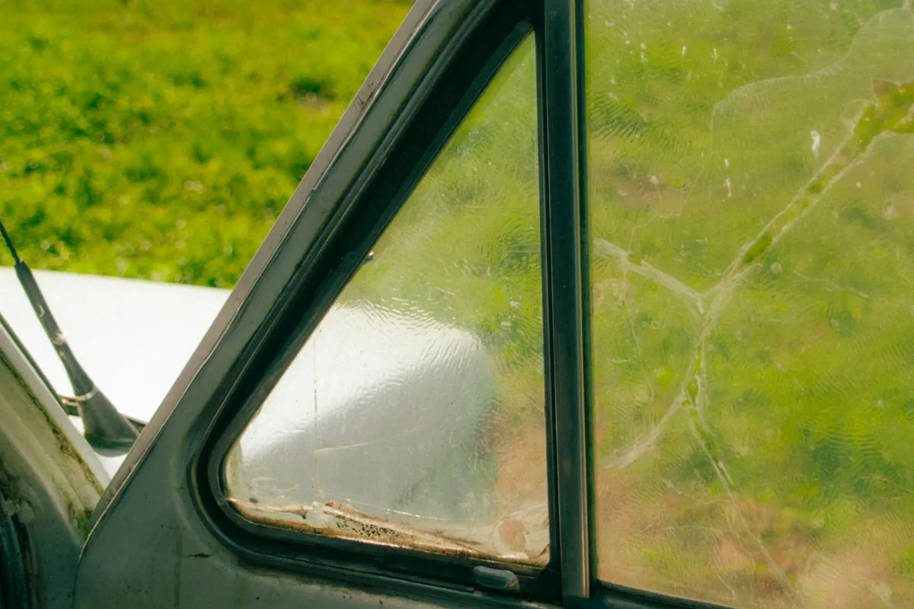

Car window replacement in Bowie covers door glass, small quarter windows and rear windshields. Bowie Auto Glass Repair comes to your home or office, cleans out the broken glass, installs the new window and checks that it rolls up and seals properly.

Car window replacement starts with removing the inside door panel or trim. The technician vacuums the shattered tempered glass out of the door, the tracks and the cabin, then fits the new glass to the window regulator and adjusts it so it rolls up evenly and seals against the weatherstrip. For a back window, the new glass is bonded in place and the defrost and antenna connections are reattached and tested.
Thieves often smash a side window, leaving glass across the seats and floor.
A failed regulator or clip can crack the glass or leave it stuck.
Rear glass can shatter from a hit, a slammed hatch or a sharp temperature change.
Small fixed windows behind the doors are easy to miss and easy to break.
Falling limbs in summer storms and ice storms break side and back glass.
Wind noise or leaks after a past repair can mean the glass sits wrong.
Most side and back windows are tempered glass, which is heated and cooled quickly during manufacturing so it is much stronger than ordinary glass. When it does break, it bursts into small rounded pieces instead of sharp shards, which is safer for people in the car. The downside is that it cannot be repaired, so any crack or break means a new window.
The cost of car window replacement in Bowie depends on which window broke and on the vehicle. Door glass is usually the most straightforward, while back glass with defrost lines, an antenna or a wiper mount takes more time. Tinted or privacy glass and some luxury models need specific parts. Comprehensive insurance often covers break-ins and storm damage. Call for a free quote.
| Tempered | Laminated | |
|---|---|---|
| Where it is used | Most side and back windows | Windshields and some newer front side windows |
| How it breaks | Shatters into small pieces | Cracks but stays in one sheet |
| Repairable? | No, it must be replaced | Small damage sometimes |
| Noise and security | Standard | Quieter and harder to break through |
Front glass damage is handled with windshield replacement in Bowie. See all auto glass services in Bowie for the full list.
Often, yes. Common door glass is usually available quickly, and the install takes about an hour. Less common back glass may need to be ordered first, and we tell you the timing when we quote.
Yes. The technician vacuums glass out of the door, the window tracks, the seats and the floor. Some tiny pieces can hide deep in a door, so we also run the window up and down to clear them.
Break-ins and storm damage are usually covered under the comprehensive part of an auto policy, minus your deductible. We can help you start the claim.
Park in a garage if you can, remove valuables, and cover the opening with heavy plastic taped to the frame, not the paint. Call us and we will book the earliest open time.
Call for a free car window quote in Bowie. We clean up the glass and get the car sealed up again.
Call (240) 824-0566 Now